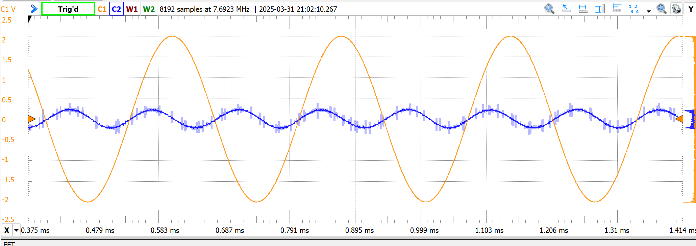
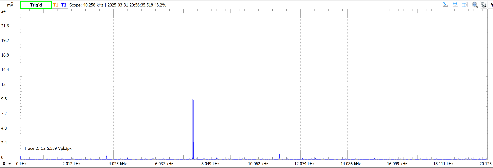
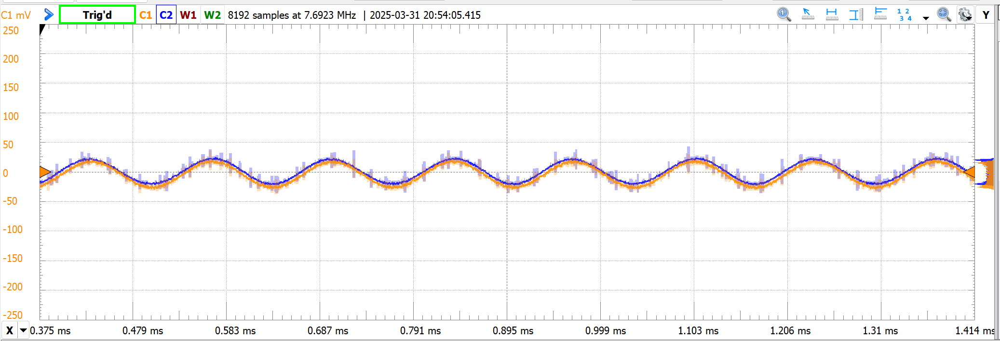

Frequency doubler, better this time
A second pass at the analog frequency doubler. Same topology as the 2024 attempt, but tighter at every step. Measured inductances first, cascaded two LC band-passes centred at 7.45 kHz, tuned potentiometers down with an Analog Discovery, and ended at an SDR of roughly 26.7 dB. A real, audible step up.
What I did differently
- Measured the actual inductors: 92 mH and 102 mH, instead of assuming the nominal value. Capacitor targets fall straight out of the resonance formula once the inductance is real.
- Built the capacitors I wanted: 5 nF as two 10 nF in series; ~4.5 nF as that 5 nF in series with a parallel pair of 22 nF caps. Not standard values, but built from standard parts.
- Used the Analog Discovery for the AC-RMS reading of the full output and the isolated tone, so the SDR estimate was based on actual measurements instead of scope eyeballing.
- Op-amp buffer between filters, same as before, but with the two filter stages now actually decoupled.
The numbers
- Input: 3725 Hz, target output: 7450 Hz.
- Output AC-RMS: 14.77 mV. Tone AC-RMS at 7450 Hz: ~14.75 mV (rounded down for conservatism). Noise power therefore ~4.7×10⁻⁷ V².
- SDR ≈ 26.66 dB. Clean enough that the side-by-side scope traces of the doubled signal and a reference sinusoid are visually almost indistinguishable.


